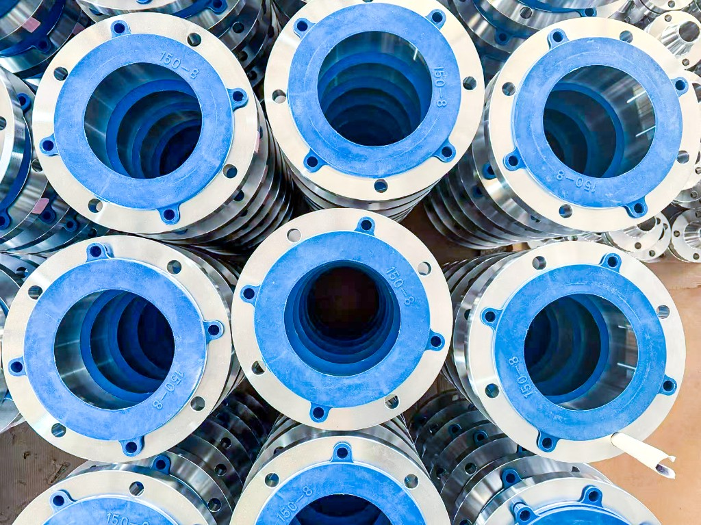
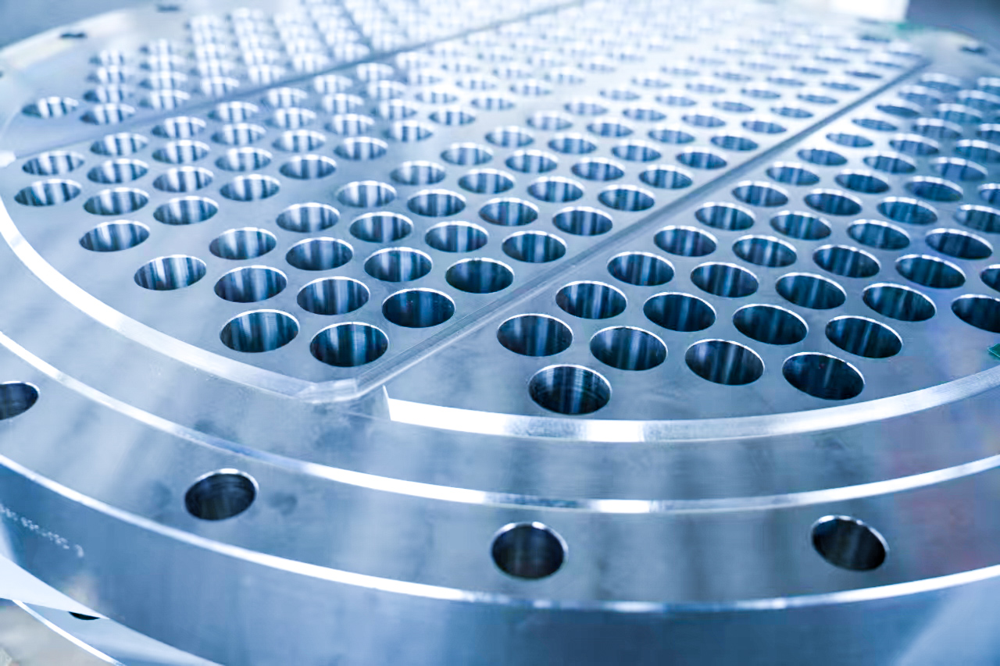
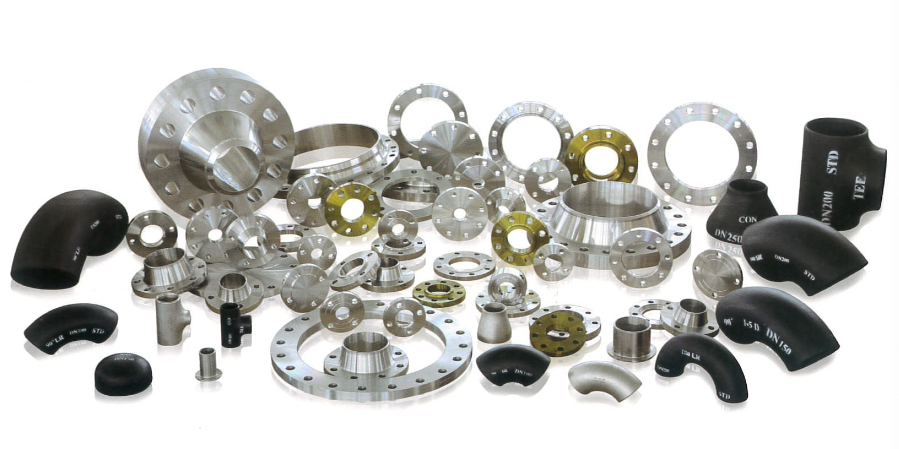
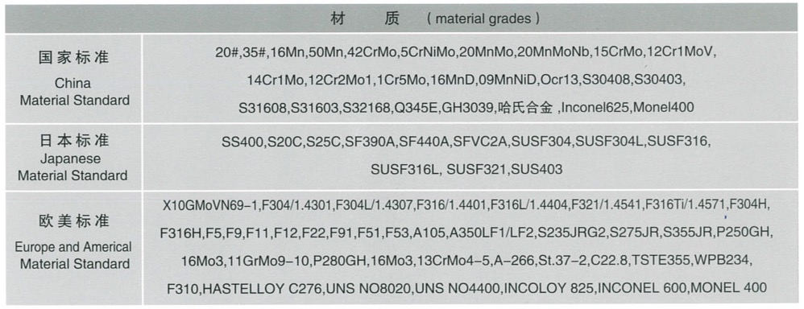
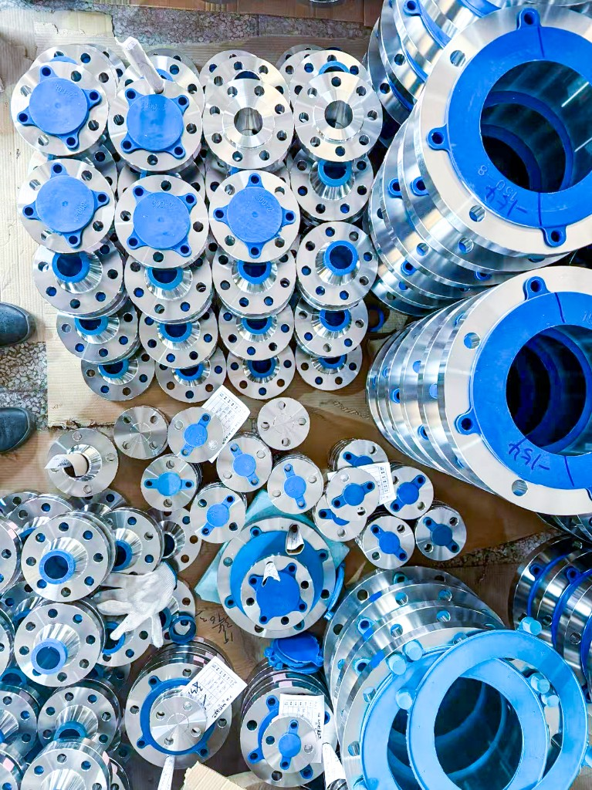
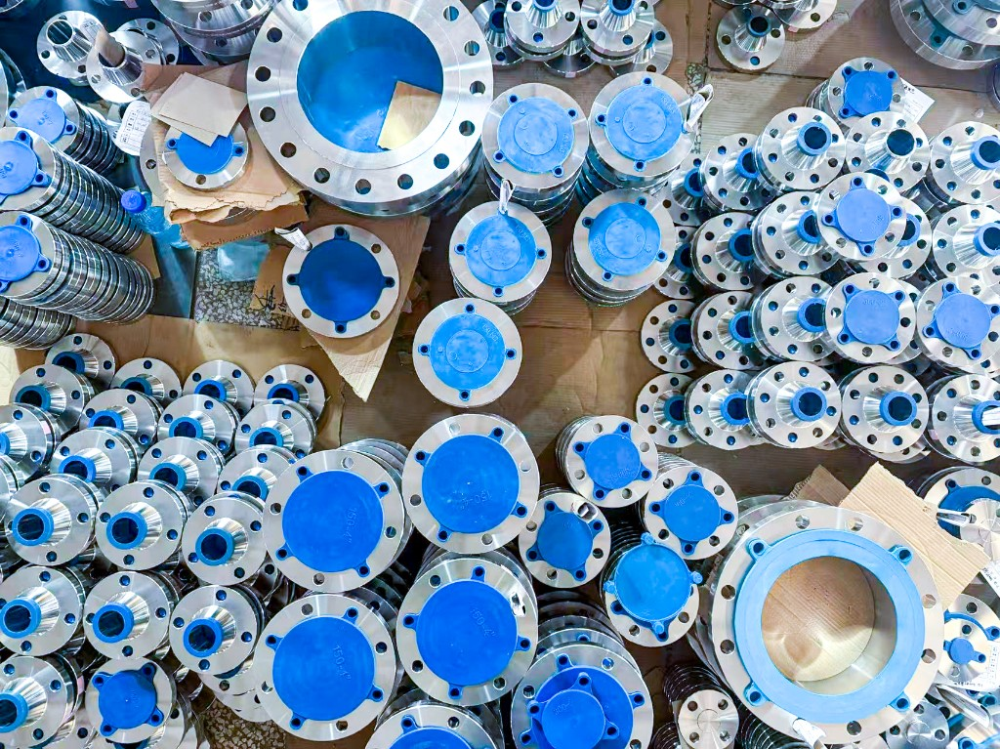
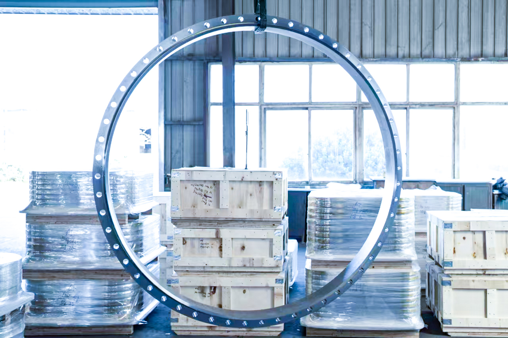

Фланцы для нефтегаза и химической промышленности: крупные диаметры до 120″ (DN 3000+), высокое давление до ASME/API Class 2500 (2500#). Сертификация: API / ISO / CE.
FUI — производитель и поставщик кованых фланцев для нефтегазовой, нефтехимической и энергетической промышленности с полной прослеживаемостью и сертификацией.
Фланцы большого диаметра и высокого давления




Поставляем промышленные фланцы и поковки для трубопроводов, арматуры, насосов и оборудования. Изготовление по международным стандартам с прослеживаемостью материала и NDT. Идентификация на фланцах и упаковке (Class 150-8, DN 25, DN 20 и т.д.) для правильного подбора и поставки.
| Тип | Обозначение | Описание |
|---|---|---|
| Резьбовой фланец | TH | Резьбовое отверстие для соединения с трубой без сварки. |
| Плоский фланец | Plate | Плоское кольцо с центральным отверстием и болтовыми отверстиями. |
| Надвижной фланец | SO | Надевается на трубу, угловой шов с двух сторон; типичен для средних давлений. |
| Приварной воротниковый | WN | Коническая шейка под приварку встык; оптимален для высокого давления. |
| Длинная шейка | LWN | Удлинённая шейка для патрубков сосудов и специальных компоновок. |
| Глухой фланец | BL | Сплошной диск для заглушки конца трубы; тот же bolt circle, что и у ответного фланца. |
| Под приварку в раструб | SW | Труба вставляется в раструб и приваривается; компактное исполнение. |
| Специальный фланец | Special | Нестандартные размеры или форма по заказу. |



| Параметр | Диапазон |
|---|---|
| Размер (дюймы) | 1/2" – 80" |
| Размер (DN) | DN15 – DN2000 |
| Класс давления | ASME Class 150 – 2500 |
| PN | EN PN6 – PN400 |
| Поверхность | RF / RTJ (по применению) |
| Стандарты | ASME B16.5, B16.47, EN 1092-1, DIN, JIS |
| Материалы | См. таблицу марок на странице спецификаций |

Фланцы большого диаметра до 120″ и трубопроводная арматура высокого давления для нефтегазовой и химической промышленности. Фланцы большого диаметра и высокого давления →
Фланцы большого диаметра → | Фланцы высокого давления → | DN 120″ / Class 2500 →